<!doctype html>
<html lang="en">
<head>
<meta charset="UTF-8">
<meta name="viewport" content="width=device-width, initial-scale=1.0">
<title>Module 4: Genetic Circuit Design — SynBase</title>
<link rel="stylesheet" href="../css/style.css?v=73">
</head>
<body>

<header class="site-header" id="site-header"></header>
<section class="module-hero" id="module-hero"></section>

<div class="container narrow">
  <div class="page-nav-mount" id="page-nav-mount"></div>
</div>
<main class="container narrow" id="page-viewport"></main>
<div class="container narrow">
  <div class="page-footer-nav" id="page-footer-nav"></div>
</div>

<script src="../js/modules-meta.js?v=14"></script>
<script src="../js/progress.js?v=25"></script>
<script src="../js/quiz-engine.js?v=18"></script>
<script>
const PART1 = "Part 1: Components that Determine Transcription";
const PART2 = "Part 2: Components that Determine Translation";
const PART3 = "Part 3: Logic Gates";
const PART4 = "Part 4: More Advanced Systems";

const MODULE = {
  id: "module4",
  number: 4,
  title: "Genetic Circuit Design",
  lede: "In Module 3, you learned how to turn a real-world need into a research question. Now it's time for the technical toolkit: the DNA parts, logic gates, and regulatory systems that let you actually design a genetic circuit to build a solution.",
  pages: [
    {
      id: "4.1r", type: "read", title: "Welcome to Genetic Circuit Design",
      html: `
        <p>In Module 3, you learned how to turn a real-world need into a research question — the "what" and "why" behind a synthetic biology project. Now it's time for the "how": the actual technical building blocks you'd use to build a solution to a need like the one you identified.</p>
        <p>Back in Module 2, you learned that plasmids are small, circular pieces of DNA that are easy to insert into cells. But a plasmid on its own is just a container. What actually determines what a cell does with the DNA inside it?</p>
        <p>That's where genetic circuits come in. A genetic circuit is a set of DNA parts arranged so a cell reads them in a specific way — sensing a signal, "computing" a response, and producing an output. Over this module and the next two, you'll learn how to read, and eventually design, circuits like these — the same technical skill that turns a Module 3-style need statement into something you could actually build.</p>
        <p>Think of an electronic circuit: an input, some internal computation, and an output — like a flash of light. Genetic circuits work the same way, just built from genes instead of wires. Most follow a sense–compute–output pattern: the cell senses a biological signal, computes a response to it, and produces an output.</p>
        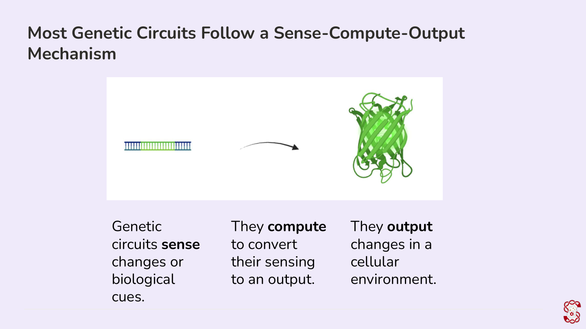
        <p>This module has four parts: the DNA parts that control transcription, the parts that control translation, logic gates, and more advanced genetic systems like feedback loops. Let's start with transcription.</p>
      `
    },
    {
      id: "4.2r", type: "read", part: PART1, title: "Promoters and Terminators",
      html: `
        <p>Every genetic circuit needs a way to say "start here" and "stop here." A promoter is the DNA sequence that does the former — it's where RNA polymerase (the enzyme that builds RNA) and other transcription factors bind to begin transcription. Promoters come in two flavors: constitutive promoters are always on, while inducible promoters only turn on in response to a specific stimulus.</p>
        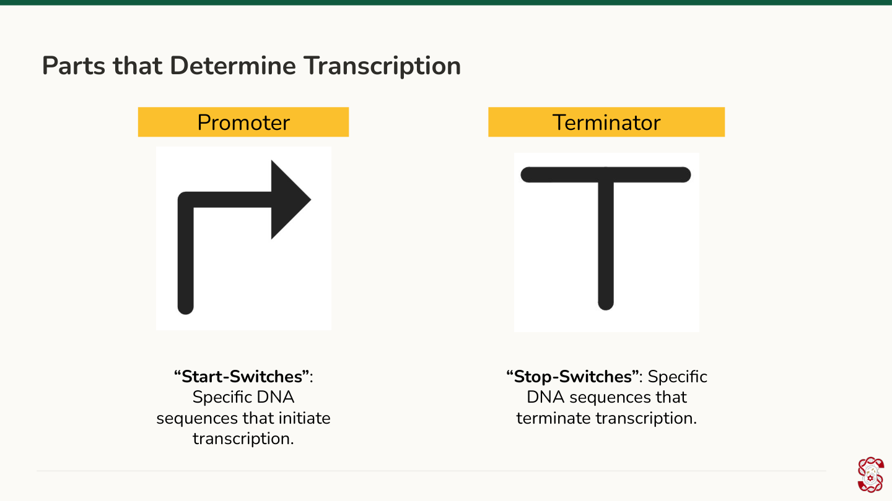
        <p>A terminator does the opposite — it's the sequence that tells RNA polymerase to stop. Terminators work differently depending on the cell type: in eukaryotic cells, protein complexes bind the terminator region and cut the RNA at a cleavage site; in bacterial cells, either an RNA hairpin structure or a protein called Rho causes RNA polymerase to fall off.</p>
      `
    },
    {
      id: "4.3r", type: "read", part: PART1, title: "Promoter Motifs",
      html: `
        <p>Promoters aren't random sequences — they contain recognizable patterns, or motifs, that cells use to find them:</p>
        <ul>
          <li><strong>TATA box</strong> (eukaryotic): usually about 35 bases upstream of where transcription starts; helps recruit other transcription factors.</li>
          <li><strong>Pribnow box</strong> (bacterial): usually about 10 bases upstream; this is where the sigma subunit of RNA polymerase binds directly.</li>
          <li><strong>High GC content</strong> (eukaryotic): promoter regions rich in CpG sites (a C followed by a G) tend to be easier for transcription factors to bind, since they're less likely to be tightly packaged with histones. Bacterial promoters tend to run the opposite way — higher AT content, lower GC content.</li>
        </ul>
        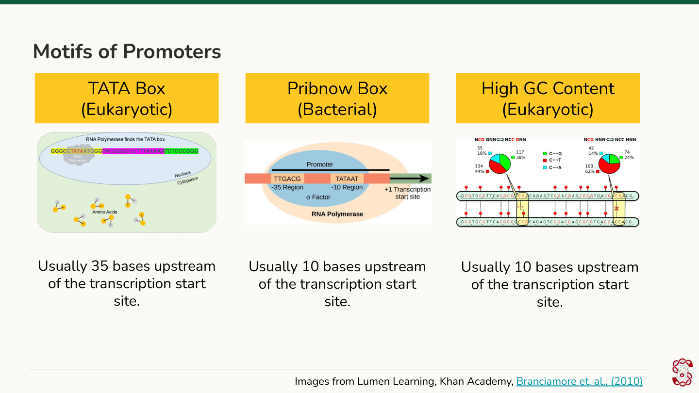
        <p>A real, commonly used mammalian promoter is the CMV promoter — you'll work with it again in Module 5, and you'll get to examine a real promoter sequence yourself in the activity below.</p>
        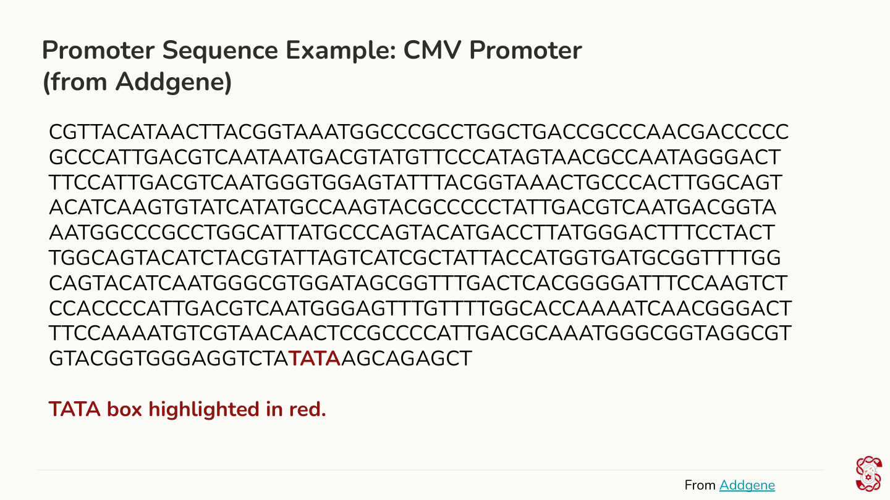
      `
    },
    {
      id: "4.4s", type: "shortanswer", part: PART1, title: "Quick Recall: The Eukaryotic Promoter Motif",
      shortAnswer: {
        prompt: "What's the name of the eukaryotic promoter motif found about 35 bases upstream of the transcription start site, which helps recruit transcription factors?",
        acceptedAnswers: ["TATA box", "TATA"],
        explanation: "The TATA box is the eukaryotic promoter motif you just read about — its bacterial counterpart, positioned closer to the start site (about 10 bases upstream), is called the Pribnow box."
      }
    },
    {
      id: "4.5p", type: "practice", part: PART1, title: "Practice: Identifying Bacterial Promoters",
      question: {
        prompt: "Which of the following is not known to be a bacterial promoter?",
        options: [
          { text: "lac", correct: false },
          { text: "tac", correct: false },
          { text: "BAD", correct: false },
          { text: "CMV", correct: true }
        ],
        explanation: "lac, tac, and BAD are all common bacterial promoters. CMV is a mammalian promoter — you'll see it again in Module 5 when we build a real plasmid."
      }
    },
    {
      id: "4.6p", type: "practice", part: PART1, title: "Practice: Eukaryotic Promoter Motifs",
      question: {
        prompt: "Which of the following are motifs of a eukaryotic promoter? Select all that apply.",
        multi: true,
        options: [
          { text: "TATA box", correct: true },
          { text: "Pribnow box", correct: false },
          { text: "High GC content", correct: true },
          { text: "High AT content", correct: false }
        ],
        explanation: "The TATA box and high GC content are both eukaryotic promoter features. The Pribnow box and high AT content are bacterial."
      }
    },
    {
      id: "4.7r", type: "read", part: PART1, title: "Terminator Motifs",
      html: `
        <p>Terminators have their own motifs, too:</p>
        <ul>
          <li><strong>Polyadenylation signal</strong> (eukaryotic): AATAAA in DNA (AAUAAA in RNA); a protein complex called CPSF binds here and cleaves the RNA.</li>
          <li><strong>Hairpin</strong> (bacterial): the newly made RNA folds back on itself, physically blocking RNA polymerase and stopping transcription.</li>
        </ul>
        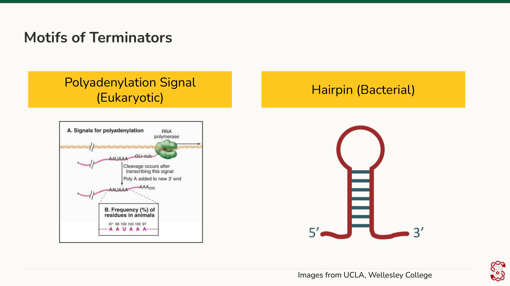
        <p>A common real mammalian terminator is the SV40 poly(A) signal — you'll see it again when we design plasmids in Module 5.</p>
      `
    },
    {
      id: "4.8p", type: "practice", part: PART1, title: "Practice: Plant Terminators",
      question: {
        prompt: "Which of the following is a plant terminator?",
        options: [
          { text: "CaMV", correct: true },
          { text: "T7", correct: false },
          { text: "tonB", correct: false },
          { text: "TRE", correct: false }
        ],
        explanation: "CaMV is a common plant terminator. T7 and tonB are bacterial; TRE is mammalian."
      }
    },
    {
      id: "4.9r", type: "read", part: PART1, title: "Promoters and Terminators by Cell Type",
      html: `
        <p>Now that you've seen what promoters and terminators look like, here's a reference list you'll come back to when you start designing your own plasmid in Module 5:</p>
        <ul>
          <li><strong>Promoters</strong> — Bacterial: lac, tac, BAD. Plant: CaMV, Ubi, NOS. Mammalian: CMV, EF-1alpha, TRE.</li>
          <li><strong>Terminators</strong> — Bacterial: T7, tonB. Plant: NOS, CaMV 35S. Mammalian: poly-A signals like bGH (Bovine Growth Hormone) and SV40.</li>
        </ul>
        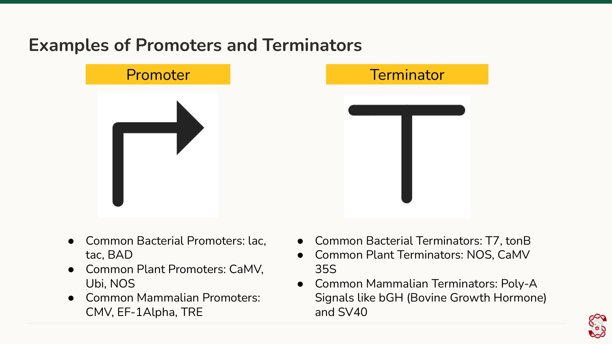
      `
    },
    {
      id: "4.10p", type: "practice", part: PART1, title: "Practice: True Statements About Promoters",
      question: {
        prompt: "Which of the following are true about promoters? Select all that apply.",
        multi: true,
        options: [
          { text: "Constitutive promoters are only turned on in response to specific stimuli.", correct: false },
          { text: "Inducible promoters are only turned on in response to specific stimuli, but the threshold for turning on is much lower.", correct: false },
          { text: "Transcription factors bind to specific sequences of promoters.", correct: true },
          { text: "RNA Polymerase is an enzyme that synthesizes RNA from DNA, and they bind onto transcription factors.", correct: true }
        ],
        explanation: "Constitutive promoters are always on — it's inducible promoters that respond to a stimulus, so the first statement has it backwards. Transcription factors and RNA polymerase both interact directly with promoter sequences, which makes the last two statements correct."
      }
    },
    {
      id: "4.11f", type: "freeresponse", part: PART1, title: "Discussion Forum Activity #1",
      freeResponse: {
        prompt: "Your task: look up specific promoter and terminator sequences from Addgene.<br>1. Click on one of these Addgene links: <a href=\"https://www.addgene.org/browse/sequence/487909/\" target=\"_blank\" rel=\"noopener\">#1</a> / <a href=\"https://www.addgene.org/browse/sequence/324340/\" target=\"_blank\" rel=\"noopener\">#2</a> / <a href=\"https://www.addgene.org/177036/\" target=\"_blank\" rel=\"noopener\">#3</a><br>2. Write down the names of every promoter and terminator described, and their length. Use the same labels the source uses.<br>3. Write down the first and last few bases of each region."
      }
    },
    {
      id: "4.12r", type: "read", part: PART2, title: "Start/Stop Codons and the Coding Sequence",
      html: `
        <p>Promoters and terminators control transcription — turning a DNA sequence into RNA. But how does the cell know which part of that RNA to actually turn into protein?</p>
        <p>Codons — the three-base sequences you learned about in Module 2 — are the answer. The start codon, AUG (or ATG in DNA), always codes for methionine and marks where translation begins. Three codons — UAA, UAG, and UGA (TAA, TAG, TGA in DNA) — don't code for any amino acid at all; they're stop codons that signal translation to end. The coding sequence is everything in between — the actual protein-coding instructions.</p>
        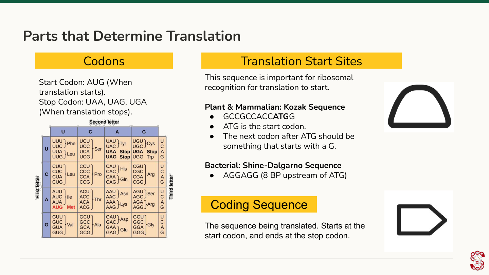
      `
    },
    {
      id: "4.13r", type: "read", part: PART2, title: "Translation Initiation: Kozak vs. Shine-Dalgarno",
      html: `
        <p>Before translation can start, the ribosome has to find the right spot on the mRNA — and different cell types use different signals to mark it.</p>
        <p>Plant and mammalian cells use a Kozak sequence right before the start codon — GCCGCCACCATG is a reliable one. Bacterial cells instead rely on a Shine-Dalgarno sequence, AGGAGG, positioned about 8 base pairs upstream of the start codon. Same job — flag the ribosome's landing spot — different sequence depending on the organism.</p>
      `
    },
    {
      id: "4.14p", type: "practice", part: PART2, title: "Practice: Finding the Stop Codon",
      question: {
        prompt: "Refer to a codon table. Where does translation stop in this sequence? AUGUCACAUCGUAGUGGUGACGCCAUCACUAAUAGACUUUAUUAACAUCAC",
        options: [
          { text: "UCA", correct: false },
          { text: "AGU", correct: false },
          { text: "GCC", correct: false },
          { text: "UAA", correct: true }
        ],
        explanation: "Reading from the start codon (AUG) in groups of three, the 15th codon is UAA — a stop codon. Translation ends there."
      }
    },
    {
      id: "4.15p", type: "practice", part: PART2, title: "Practice: Codons for Valine",
      question: {
        prompt: "Which of the following codons codes for Valine? Select all that apply.",
        multi: true,
        options: [
          { text: "GUU", correct: true },
          { text: "GUA", correct: true },
          { text: "CAU", correct: false },
          { text: "CGU", correct: false }
        ],
        explanation: "Valine's codons all start with GU — GUU, GUC, GUA, and GUG. CAU codes for histidine and CGU codes for arginine."
      }
    },
    {
      id: "4.16p", type: "practice", part: PART2, title: "Practice: Identifying a Kozak Sequence",
      question: {
        prompt: "Which of the following is an acceptable, well-formed Kozak sequence?",
        options: [
          { text: "GCCGCCACCATG", correct: true },
          { text: "AGGAGGATG", correct: false },
          { text: "GCCTCCTCCATG", correct: false },
          { text: "GCCCCAAAAATG", correct: false }
        ],
        explanation: "GCCGCCACCATG is the standard Kozak consensus sequence. AGGAGG is the bacterial Shine-Dalgarno sequence, not a Kozak sequence — it doesn't belong in a plant or mammalian construct."
      }
    },
    {
      id: "4.17r", type: "read", part: PART3, title: "What Is a Logic Gate?",
      html: `
        <p>A genetic circuit can have more than one input. Logic gates describe which combinations of those inputs lead to a particular output. "True," here, could mean an input being present, being above some concentration, or whatever the bioengineer designing the circuit decides — as long as the rule holds, it counts as a logic gate. We'll cover two: AND-gates and OR-gates.</p>
      `
    },
    {
      id: "4.18r", type: "read", part: PART3, title: "AND-Gates",
      html: `
        <p>An AND-gate requires two inputs to both be true before it produces an output. Stanford iGEM's own 2026 team built one: an AND-gate that only expresses a YAP/TAZ inhibitor when both ADAM12 and POSTN mRNA — two genes upregulated in keloid (overgrown scar) fibroblasts — are detected. Jiang et al. built a similar AND-gate that only activates a sensor when both IL6 and EGFP are detected.</p>
        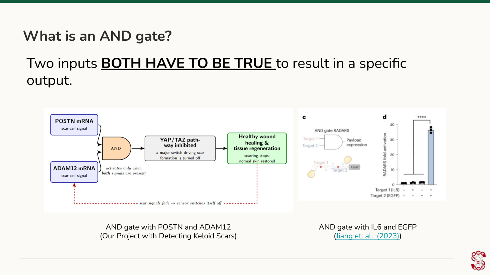
      `
    },
    {
      id: "4.19r", type: "read", part: PART3, title: "OR-Gates",
      html: `
        <p>An OR-gate only needs one of two inputs to be true. In an example from Wong et al. (2015), adding either arabinose or rhamnose — not necessarily both — was enough to trigger red fluorescence.</p>
        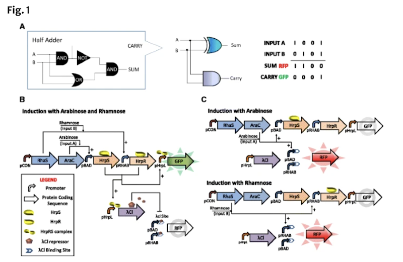
      `
    },
    {
      id: "4.20p", type: "practice", part: PART3, title: "Practice: The Arabinose/Rhamnose AND & OR Gate",
      question: {
        prompt: "Explain how this AND & OR gate works with arabinose and rhamnose (example from Wong et al., 2015).",
        options: [
          { text: "Either arabinose or rhamnose has to be expressed for GFP to be expressed.", correct: false },
          { text: "Both arabinose and rhamnose have to be expressed for RFP to be expressed.", correct: false },
          { text: "At least one of arabinose or rhamnose must be expressed for RFP to be expressed, but both being present is required for GFP to be expressed.", correct: false },
          { text: "Either (but not both) arabinose or rhamnose has to be expressed for RFP to be expressed, but both being present is required for GFP to be expressed.", correct: true }
        ],
        explanation: "This circuit uses an OR-gate for RFP (either input triggers it) and an AND-gate for GFP (both inputs are required) — the same two molecules driving two different logical outputs."
      }
    },
    {
      id: "4.21r", type: "read", part: PART4, title: "Activators and Repressors",
      html: `
        <p>Not every circuit is either fully on or fully off — some genes get turned up or down by regulatory proteins that bind to their promoters.</p>
        <p>Activators increase gene expression. Cyclic AMP (cAMP) is a classic example: when it binds its promoter, a protein called CAP also binds, boosting RNA polymerase activity.</p>
        <p>Repressors decrease gene expression. Tryptophan is a classic example: when tryptophan is present, a tryptophan repressor protein binds the operator and blocks transcription. When tryptophan runs out, the repressor lets go, and transcription can resume.</p>
        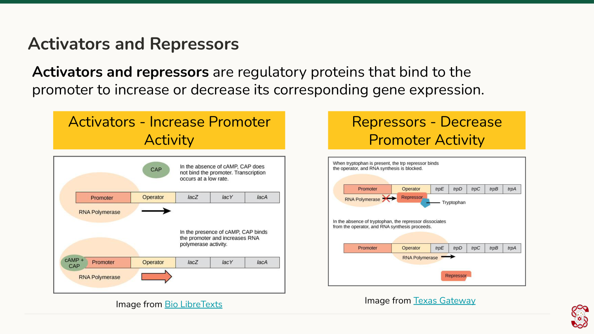
      `
    },
    {
      id: "4.22p", type: "practice", part: PART4, title: "Practice: How Repressors Respond to Their Target Molecule",
      question: {
        prompt: "A repressor protein binds an operator and blocks RNA polymerase from transcribing a gene. What happens when the repressor's target molecule (like tryptophan) becomes available and binds the repressor?",
        options: [
          { text: "The repressor releases the operator, and transcription can resume.", correct: true },
          { text: "The repressor binds the operator more tightly, permanently blocking transcription.", correct: false },
          { text: "The repressor turns into an activator.", correct: false },
          { text: "Nothing changes — repressors are not affected by other molecules.", correct: false }
        ],
        explanation: "Repressors bind and release the operator depending on conditions — that's what makes them a <em>regulator</em> rather than a permanent off-switch. When tryptophan binds the repressor in this example, the repressor lets go and transcription resumes."
      }
    },
    {
      id: "4.23r", type: "read", part: PART4, title: "Feedback Loops",
      html: `
        <p>Feedback loops happen when a circuit's own output changes its future input. A positive feedback loop increases input — Becskei et al. showed this with a circuit where more GFP expression drove even more expression of a gene called tetR. A negative feedback loop decreases input — Becskei and Serrano showed the opposite pattern, where more TetR-EGFP expression suppressed a target called tetO-1.</p>
        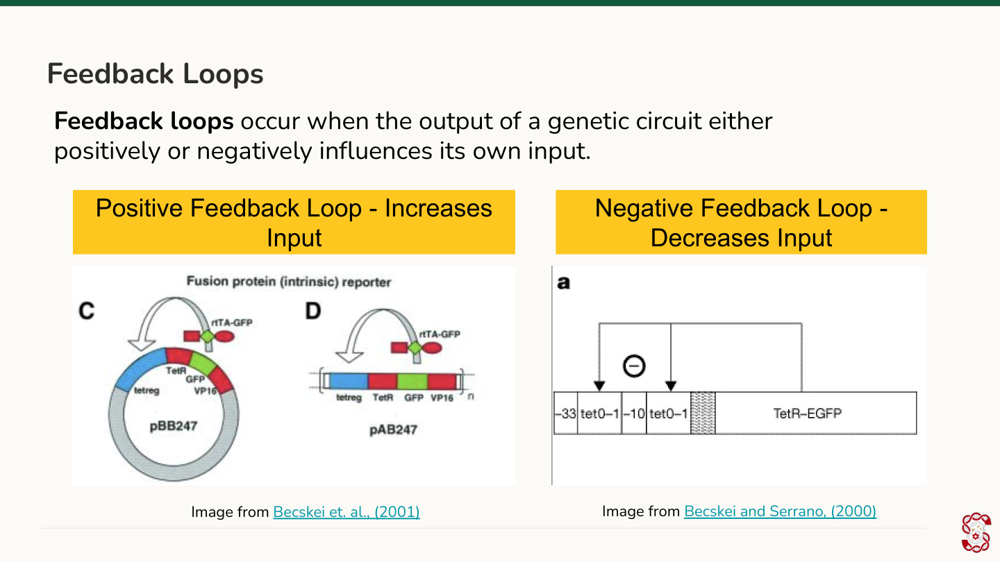
      `
    },
    {
      id: "4.24p", type: "practice", part: PART4, title: "Practice: Positive or Negative Feedback?",
      question: {
        prompt: "A circuit's output protein binds back to its own promoter and shuts transcription down as output levels rise. Is this a positive or negative feedback loop?",
        options: [
          { text: "Negative — the output is decreasing its own future input.", correct: true },
          { text: "Positive — the output is increasing its own future input.", correct: false },
          { text: "Neither — this isn't a feedback loop at all.", correct: false },
          { text: "It depends on which cell type is used.", correct: false }
        ],
        explanation: "A negative feedback loop is defined by the output suppressing its own input — exactly what's happening here, the same pattern Becskei and Serrano observed with TetR-EGFP and tetO-1."
      }
    },
    {
      id: "4.25m", type: "matching", part: PART4, title: "Module 4 Recap",
      matching: {
        instructions: "Match the term to its definition.",
        pairs: [
          { left: "Promoter", right: "The DNA sequence that starts transcription" },
          { left: "Terminator", right: "The DNA sequence that stops transcription" },
          { left: "Activator", right: "A protein that increases a promoter's activity" },
          { left: "Repressor", right: "A protein that decreases a promoter's activity" },
          { left: "AND-gate", right: "Requires two inputs to both be true for an output" },
          { left: "OR-gate", right: "Requires only one of two inputs to be true for an output" }
        ]
      }
    },
    {
      id: "4.26o", type: "ordering", part: PART4, title: "Arrange a Genetic Circuit's Parts",
      ordering: {
        prompt: "A genetic circuit is read in one direction, from the 5' end to the 3' end. Arrange these four parts in the order they appear in a working circuit.",
        items: [
          "Promoter",
          "Ribosome binding site (Kozak or Shine-Dalgarno sequence)",
          "Coding sequence (start codon → gene → stop codon)",
          "Terminator"
        ],
        explanation: "Transcription has to start before there's anything to translate, so the promoter comes first. The ribosome binding site sits just before the coding sequence to help the ribosome find the start codon, and the terminator comes last, marking where transcription stops."
      }
    },
    {
      id: "4.27f", type: "freeresponse", part: PART4, title: "Discussion Forum Activity #2",
      freeResponse: {
        prompt: "You're given the following parts to build a genetic circuit that expresses GFP (green fluorescent protein) in mammalian cells (HEK 293): a Kozak sequence (ribosome binding site), a start and stop codon, a promoter, and a poly-A tail terminator.<br><br>In 1–2 sentences, explain how these parts should be arranged relative to each other and to the GFP gene, and what role each part plays in getting GFP expressed.<br><br>Then, take a step back: if the need you identified in Module 3 required detecting or reporting something inside a cell, how might a circuit like this one be part of your solution?"
      }
    }
  ]
};

(async () => {
  const user = await bootstrapAuthAndProgress(false);
  if (!user) return;
  renderModulePage(MODULE);
})();
</script>
</body>
</html>
